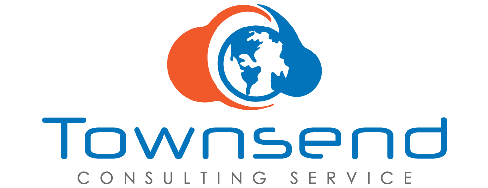

Consulting
Custom technology solutions for businesses that demand results

Dispatch Dataworks LLC
Consulting & Software Development
About Us
In today's fast-paced technological landscape, digital transformation is paramount for any business. At Dispatch Dataworks LLC, we specialize in custom software development, data integration, and strategic technology consulting for organizations that demand reliability and innovation.
Who We Are
Founded by Benjamin Townsend, Dispatch Dataworks LLC brings over 20 years of experience in software architecture, web development, and enterprise solutions. We work with businesses, government agencies, and community organizations to build technology that works — not off-the-shelf, but tailored to your specific needs.
Our Philosophy
We reject generic solutions. We believe that your business deserves technology that fits your actual workflow, not the other way around. Our approach:
- Custom-built solutions tailored to your specific requirements
- Open source-first mentality where it makes sense
- End-to-end partnership from planning through deployment and beyond
- Accessibility & standards compliance (W3C, WCAG, and more)
- Scalable architecture designed for growth
Services
Our designs and applications are modern, user-friendly, responsive, and accessible across all devices — computers, mobile, tablets, and assistive technologies.
- Custom web and mobile applications
- Data integration and ETL pipelines
- System architecture and infrastructure consulting
- Database design and optimization
- API development and integration
- Legacy system modernization
- Full-stack development (Python, JavaScript, SQL, and more)
- Cloud adoption and migration (Azure/Office 365)
- Cyber security consulting and compliance
- IT operations and team management advisory
Ready to Transform Your Technology?
Whether you need a custom application, a data pipeline, or strategic technology guidance, we're ready to help. Let's have a conversation about your project.
Contact Us to Discuss Your Project